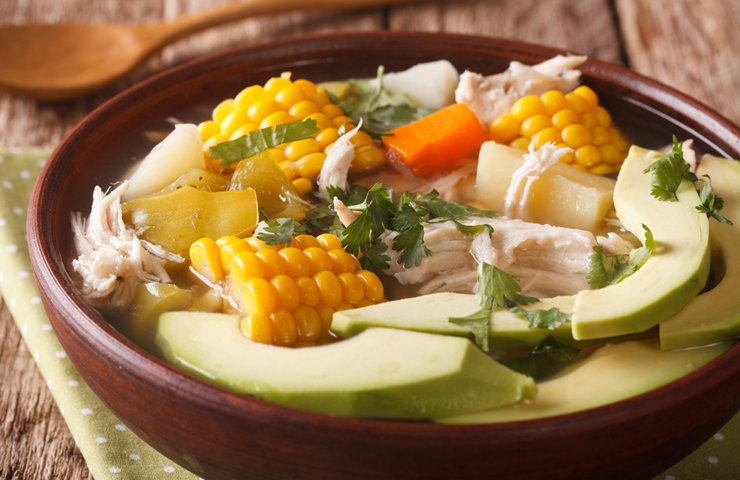
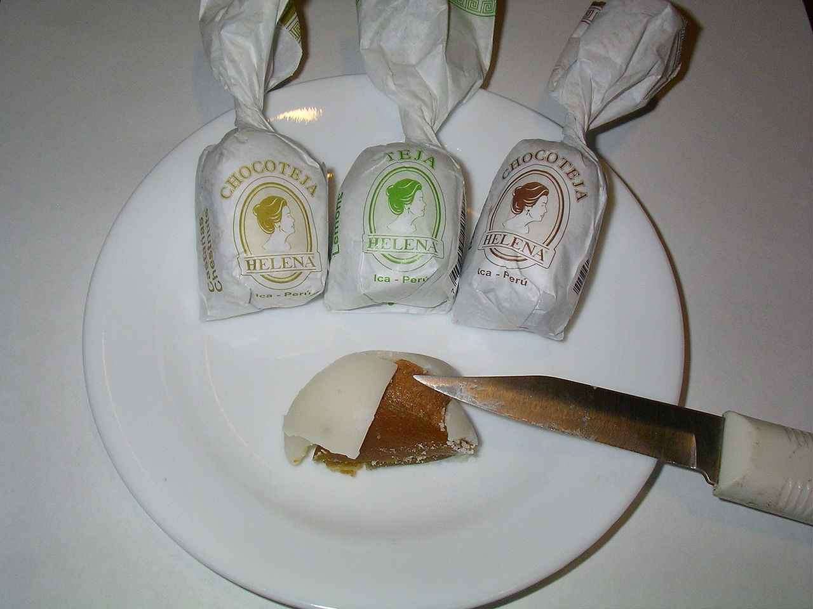

____
Традиционная еда
Арепа — лепёшка из кукурузного теста или из кукурузной муки, занимающая важное место в кухнях Колумбии и Венесуэлы

Ахиако — традиционный колумбийский картофельный суп. Существует в нескольких региональных вариантах, самым известным является «боготинской ахиако» (ajiaco santafereño) — от названия города Санта-Фе-де-Богота, столицы Колумбии. Обычно этот суп содержит кусочки курятины на кости, большие куски кукурузы на вилке, два-три типа картофеля («креольский картофель» с маленькими картофелинами, которые развариваются и делают суп гуще, масличные картофелины сорта «сабанера» и мягкие картофелины сорта «пастуса») и «гуаско» (guasca, галинсога мелкоцветная), ароматное травянистое растение, распространённое по всей Америке, которое придаёт блюду характерный вкус. При приготовлении блюда в других странах часто вместо гуаско добавляется орегано.

Манхар бланко — название нескольких разновидностей лакомств в испаноговорящих странах.

Санкочо — густой суп, распространённый в некоторых латиноамериканских странах. Готовится из мяса, клубней и овощей с приправами. Может также делаться из птицы, в прибрежных областях часто из рыбы. Существует множество региональных вариантов, однако технология приготовления одинакова — все ингредиенты варятся в одной ёмкости.

Севиче — блюдо из рыбы или морепродуктов, родиной которого считается Перу. Блюдо получило распространение в кухнях многих латиноамериканских стран, хотя рецепты могут разниться значительно. Например, в Колумбии при приготовлении блюда используется томатная паста или кетчуп.

____